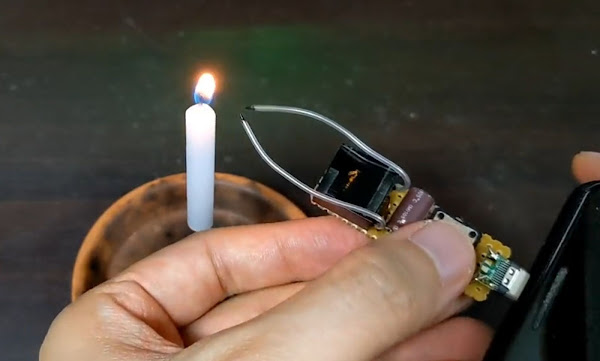
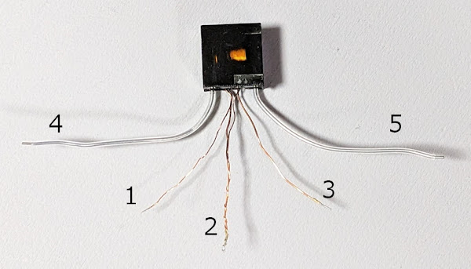
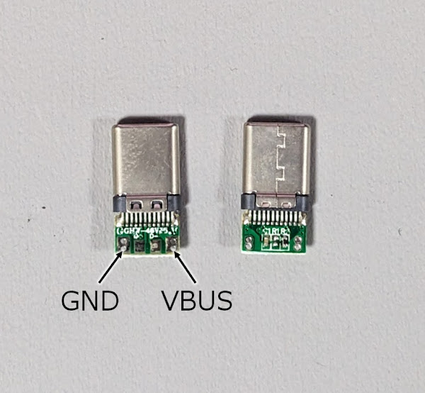
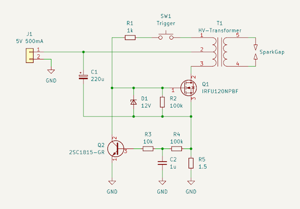
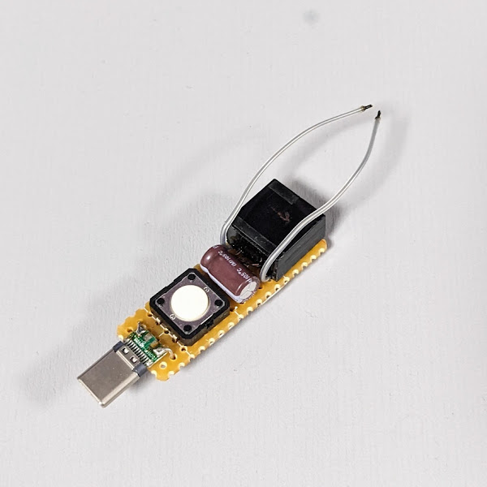
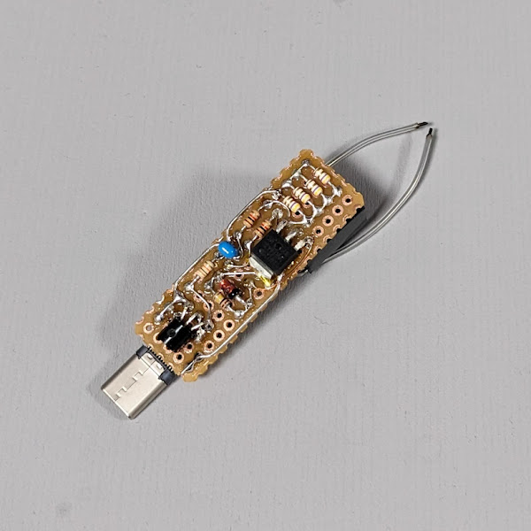
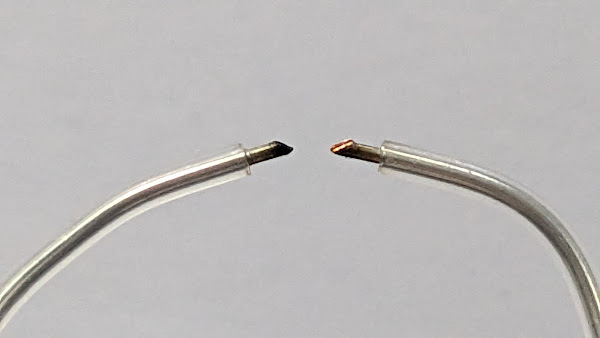

スマホ (USB) で動くプラズマアークライター

概要
スマホの USBポートからの電力供給 (OTG) で動くプラズマアークライターを 作ってみました。
実用性があるのかというと微妙ですが…普通の着火器具には燃料切れや電池切れが ありますが、毎日充電するスマホの電池を切らすことは滅多にないので、 そういう意味では「持ってればいつでも使える」と言えるかもしれません（強引）。
動作の様子
電流制限しているので市販のプラズマアークライターに比べると非力ですが、 ロウソクや紙に火を付けることはできます。
スマホの充電端子から電気取って火起こしできるプラズマアークライター
— シャポコ🌵 (@shapoco) June 19, 2024
2023/08/24 #shapolab pic.twitter.com/UCiRiAOr07
トランス
プラズマアークライターには点火用のトランスが必要ですが、小型のものが AliExpress や Amazon で手に入ります。
- 55.0￥ 42% OFF|アーク発生器15kv,高電圧インバーター,ブースター,変圧器,パルス点火1.4x1.4x0.7cm,ライターアクセサリー|回路| - AliExpress
- Amazon.co.jp: Hbaebdoo 3-5V DIYキット 高電圧発生器 アークイグナイターライターキット DIY電子生産用スイート: DIY・工具・ガーデン

勝手にピン番号をつけましたが後の回路図と対応づけるためで、正式なものではありません。
- (細い線) フィードバック出力
- (細い線 + 太い線) 電源
- (太い線) 駆動入力
- 高圧出力
- 高圧出力
OTGコネクタ
スマホから OTG で DC 5V の供給を受けるには Type-Cコネクタの CC ラインに 5.1kΩのプルダウン抵抗が必要です。
自分で実装してもいいですが、Amazon に OTGケーブル自作用のキット？が 売られているので、それを使うのが簡単です。

回路
普通のブロッキング発振回路がベースですが、消費電流を USB の 500mA 以内に 収めるために R5 で電流検出し、Q2 で発振を制御しています。
手元の実験ではこれで 430mA 程度の消費電流になりました。

製作
コンパクトにしたかったので、ちょっと無理矢理ですがユニバーサル基板に 両面実装しました。トランスと Type-Cコネクタは後でエポキシ樹脂で固定しました。


電極の先端はニッパーで斜めに切って尖らせておくと放電しやすくなります。 放電距離は非常に短い（1～2mm？）ので、ギリギリまで近づけておく必要があります。
